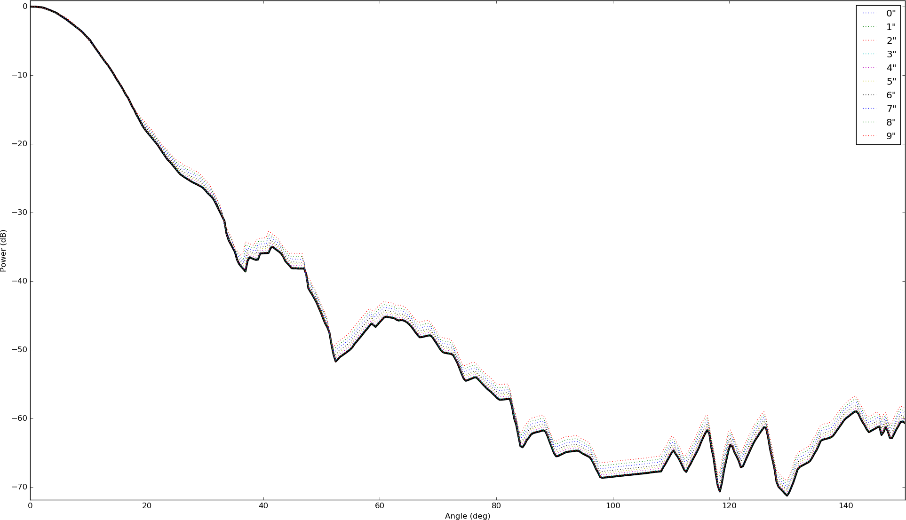
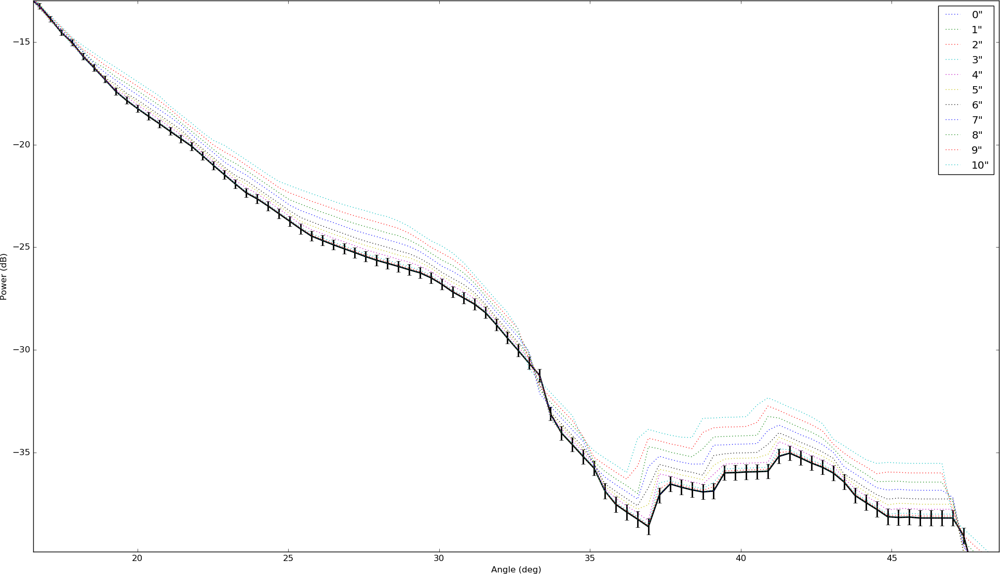

We've settled on a rough procedure for beam mapping X-Horn. First hook a signal generator to an X-Band waveguide and output continuous narrowband radiation at 11 GHz. Align the long axis of the waveguide parallel to the floor. Set up the horn on its rotating mount 6.5' away (about 2x the Fraunhofer distance, so d>>a and d>>lambda). Point the horn towards the source and hook its waveguide into a 20dB amplifier, then into a spectrum analyzer, so you can read off peak power and/or integrate over a narrow band.
The horn mount has an azimuthal degree of freedom, so it's not necessary to precisely align the base with the source along that axis; as long as you measure small angular steps about the suspected center, then you can just choose the 0 deg point with a gaussian best-fit parameter. However since we'll sweep only azimuthally, it's important to align the heighths of the source and antenna with some precision. If you're too far off, you'll take a slice of the 2d beam in a region where the power doesn't just scale by a constant relative to the center.
Here is a python script to take 1d slices of the 2d beam. You specify how many inches off-axis, and it converts that amount to a far-field angle, then selects the row in the meshgrid of radii that corresponds to that angle. It then plots the 1d beam profile over that row of radii and normalizes. It also shows 1% errorbars on the centered slice, which is probably better precision than we'll achieve.
We find that taking slices +/- 3 inches off-axis distort the profile less than 1% in log space, all the way to 180 degrees. This is comforting, because it means we won't have to add another degree of freedom (el scanning) to get 1% precision with our current setup.
Beam profiles, sliced at 0 through 10 inches off-axis and normalized. Here shown without errorbars for clarity.
|  |
Closeup showing that slices +/- 3 inches off-axis fall within 1% error of the centered slice, out to the first sidelobe. Errorbars are calculated in log space, i.e. 1% of the absolute value of the power in dB's.
|  |
{kind=link}
{kind=link}